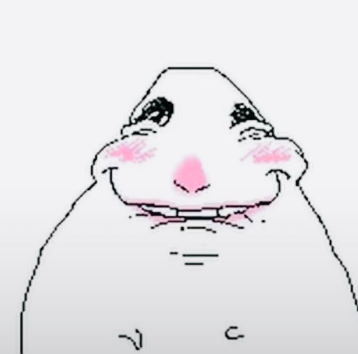

Hi baby. First of all, uhh… I’M SO HAPPY I GET TO BE YOUR VALENTINEEE. Ik na medyo cringy to pag binasa ko pero okay lang yan ikaw naman yung babasa hehehe, pero first and foremost, i wanna say na I LOVE YOUU. And I will love you always and forever. Diba nga? Always. Alam ko, we’ve been through so much tough times, misunderstandings, even a breakup pa nga eh but the important thing is, we came back for each other, diba? That means everything to me. Sana this time, we’ll do it right. I know it’s not going to be easy at may mga moments na sobrang hirap, pero I truly believe we can beat this distance, baby. So please, just hold on. I don’t know what else to say just to make you feel how deeply my love for you is. More than words can ever explain beb. You are my heart, my home, my safe place. Every moment na naiisip kita, I can’t help but smile, kahit na magkalayo tayo. Every memory natin, every laugh natin, every time na nag-comfort tayo sa isa’t isa… I hold them close kasi they remind me na what we have is real and worth fighting for. I’ll always be here for you, through your happiest moments at through your hardest ones. Sana you’ll be here for me din, when I struggle. Sorry for my shortcomings at flaws… minsan sobra ako, minsan hindi ko naaalala kung ano ang sinasabi ko, pero thank you. Thank you for staying, for loving me, and for still choosing to handle me kahit hindi ako perfect. You mean more to me than I can ever put into words. Ikaw ang everything ko my joy, my strength, my reason to keep going. I can’t imagine my life without you, and I never want to. Gusto ko mahalin ka, fight for you, at grow with you, every single day. Ikaw ang heart at soul ko, at I will always treasure you… forever and always baby girl😏😏😏 uhh Sorry ang haba heheeh MWUAH MWUAH